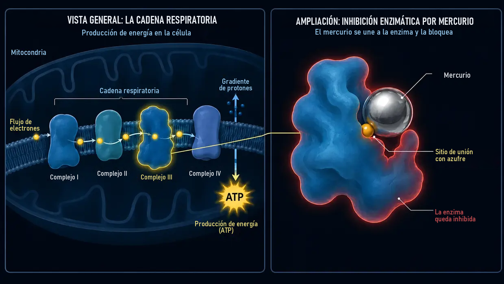

Acúfenos por medicamentos y sustancias tóxicas (ototoxicidad)
Última actualización: junio de 2026
Yo también sufrí entonces acúfenos extremos, infernales. En mi caso, el desencadenante principal fue el clásico acúfeno provocado por ruido (y no un episodio agudo relacionado con un medicamento), pero ese sonido constante fue exactamente el mismo ataque permanente a mis nervios, mi sueño y toda mi vida. También a mí los médicos me dijeron a menudo que simplemente tenía que aprender a vivir con ello.
Escribo este artículo sobre los desencadenantes químicos porque el tema desempeñó un papel importante en mi propia investigación. Desde 2012 he profundizado en la bioquímica celular, también en los campos de la toxicología y la medicina ambiental. Y aquí es donde se cierra el círculo: en la práctica de médicos especializados en medicina ambiental (como, por ejemplo, el Dr. Klinghardt o el Dr. Mutter) se observa con frecuencia un fenómeno fascinante. Cuando en personas con acúfenos existe una carga oculta de sustancias tóxicas o metales pesados como factor determinante, una desintoxicación celular específica puede conducir a menudo a un alivio claro o perceptible de los ruidos en los oídos. Lo que comparto aquí es el conocimiento que yo mismo he adquirido a partir de esta investigación y constituye la base de los enfoques que abordaremos más adelante en este sitio web a partir de ella.
El ataque químico desde dentro
Cuando pensamos en los acúfenos, casi siempre nos vienen de inmediato dos imágenes a la cabeza: el estruendo de un concierto (ruido) o un estrés enorme, incluido el estrés interno asociado a un trauma (factor psicosomático). Sin embargo, hay un tercer desencadenante que no es mecánico ni emocional, sino puramente químico: los acúfenos por medicamentos o sustancias tóxicas. En mi opinión, este tipo de acúfeno es de los menos frecuentes, pero, para completar el cuadro, también quiero exponer mi punto de vista sobre este tercer desencadenante. En el lenguaje especializado se denomina ototoxicidad (es decir, «toxicidad para el oído»).
Quizá al principio suene abstracto, pero nuestro oído interno es extremadamente sensible a determinadas sustancias químicas. Algunos medicamentos o sustancias tóxicas ambientales pueden llegar directamente al oído interno a través del torrente sanguíneo e irritar o incluso dañar allí las delicadas células ciliadas o el nervio auditivo.
El mecanismo: cómo la química genera sonidos
Recordemos el canal iónico situado en la punta de los estereocilios que, después de una sobrecarga, queda permanentemente demasiado abierto y ya no se cierra bien, como ya expliqué en mi página sobre los acúfenos provocados por ruido. En un trauma acústico, la fuerza mecánica de las ondas sonoras altera la posición geométrica de los finos estereocilios sensoriales.
En los acúfenos por medicamentos o sustancias tóxicas, al final suele suceder algo muy parecido, solo que el camino hasta llegar ahí es distinto. En esencia, hay que imaginar cada célula ciliada del oído como una pequeña batería biológica. Mantiene un equilibrio extremadamente delicado entre energía (ATP), minerales y tensión eléctrica.
Las sustancias tóxicas ambientales o las dosis tóxicas de medicamentos pueden alterar este delicado equilibrio al perjudicar gravemente el funcionamiento de las centrales energéticas de la célula: las mitocondrias. Según mi comprensión de la bioquímica, a nivel celular sucede entonces lo siguiente:
Al verse afectado el funcionamiento de las mitocondrias —indispensables para el suministro de energía de la célula—, disminuye el nivel energético de esta, es decir, su nivel de ATP. Por eso, las diminutas bombas de la membrana celular, que para trabajar consumen continuamente ATP —es decir, energía celular—, sencillamente ya no dan abasto para mantener el equilibrio químico. Entonces el calcio se acumula dentro de la célula. Como en biología el calcio es el desencadenante directo de la transmisión del estímulo, este exceso de iones obliga a la célula a emitir «señales erróneas» de forma permanente y descontrolada. Para mí no es una casualidad misteriosa, sino un automatismo bioquímico lógico. El cerebro percibe ese fuego eléctrico continuo como un ruido.
El sonido concreto que oyes —ya sea un silbido agudo, un siseo o un zumbido grave— suele depender simplemente del punto exacto de la cóclea (caracol del oído interno) en el que se encuentren las células ciliadas afectadas. En ese momento, el oído no suele quedar destruido físicamente, pero su delicado orden interno pierde el compás.
Los «cortocircuitos» eléctricos (el nervio auditivo)
No solo corren peligro las células ciliadas, sino también el propio «cable eléctrico»: el nervio auditivo. Este nervio está rodeado por una envoltura protectora, la vaina de mielina. Esa capa aislante es extremadamente rica en grasas y minerales y, por tanto, especialmente sensible a las sustancias tóxicas que circulan por la sangre. Si el estrés químico debilita o «adelgaza» esta envoltura, el nervio deja de transmitir las señales con claridad. Se producen verdaderos «cortocircuitos» eléctricos.
Y aquí se manifiesta la pura lógica de nuestra anatomía: el nervio auditivo no es un simple cable individual, sino un grueso haz de miles de diminutas fibras nerviosas. Cada una de estas fibras se encarga de transmitir una frecuencia concreta. Si el cortocircuito tóxico (la degradación de la mielina) se produce justo en la fibra nerviosa responsable de las frecuencias altas, el cerebro registra, lógicamente, un silbido agudo. Si está afectada una fibra de tonos graves, oyes un zumbido grave. Por tanto, que percibas un ruido, un siseo o un silbido no es en absoluto casual: depende en gran medida del diminuto punto del cable principal en el que se haya dañado el aislamiento.
La ley universal de los acúfenos
Cuando se juntan todas estas piezas del rompecabezas, aparece un denominador central: según mi convicción más profunda y mi experiencia, los acúfenos son, en último término, el resultado de unos nervios que procesan la audición y están crónicamente irritados y sobreexcitados. Desde el punto de vista físico, casi da igual dónde se dé exactamente el pistoletazo de salida de esa sobreexcitación:
- Si las células ciliadas (por ruido o medicamentos) se quedan atascadas en modo de emergencia e inundan permanentemente de glutamato el nervio auditivo…
- Si las sustancias tóxicas ambientales y los metales pesados atacan el aislamiento de los nervios (la mielina) y provocan allí cortocircuitos directos…
- O si en el cerebro se acumula un estrés psicosomático intenso y crónico que mantiene los centros que procesan la audición, por así decirlo, sometidos «desde arriba» a una corriente constante…
Una vez que se comprende esta lógica universal, los acúfenos suelen perder por completo su terror misterioso.
Según mi experiencia, el resultado final es casi siempre exactamente el mismo: el sistema nervioso de esa zona está crónicamente irritado y emite un fuego eléctrico continuo de señales de socorro. Una vez que se comprende esta lógica universal, los acúfenos suelen perder por completo su terror misterioso y el camino hacia la solución se vuelve de repente clarísimo.
Desencadenantes típicos (sustancias ototóxicas)
Pero bien, sigamos: hay toda una serie de sustancias conocidas por su posible efecto ototóxico. (Importante: ¡no es una lista médica para autodiagnosticarse, sino que solo sirve para comprender el tema en general!)
1. Medicamentos
Algunos preparados pueden sobreexcitar el oído interno. Pero no basta con conocer sus nombres: hay que comprender por qué hacen descarrilar el sistema. Solo si entendemos la mecánica del daño tendrá sentido nuestro enfoque posterior (energía celular y desintoxicación). Entre los grupos más conocidos se encuentran:
Analgésicos en dosis altas (especialmente aspirina/AAS)
Para tranquilizarte de entrada: una tableta habitual para el dolor de cabeza, por lo general, no provoca acúfenos. Según la investigación, aquí suele darse una paradoja estrictamente ligada a la dosis. El peligro suele aparecer solo con dosis realmente altas y tóxicas (a menudo de varios gramos al día). Cuando eso ocurre, los modelos farmacológicos indican que el medicamento desencadena en el oído interno una reacción en cadena de tres etapas:
- El motor tartamudea: se parte de la idea de que el principio activo bloquea la prestina, una diminuta proteína que funciona como un motor en las células ciliadas externas. Como consecuencia, el amplificador coclear se viene abajo. En una reacción de pánico, el cerebro suele subir al máximo su «regulador de volumen» central (la ganancia central) para poder seguir oyendo algo.
- La hipersensibilidad nerviosa: al mismo tiempo, los modelos indican que el medicamento aumenta la excitabilidad de los receptores del nervio auditivo. El umbral de excitación baja y, por ello, el sistema nervioso reacciona con mucha más sensibilidad incluso a las señales más pequeñas.
- El apagón (el detonante): según investigaciones bioquímicas, la aspirina actúa en dosis altas como un «desacoplador» en las mitocondrias. En sentido figurado, desenchufa la corriente de la célula (falta de ATP). Y aquí está precisamente la fascinante diferencia lógica con un trauma acústico: con el ruido, la fuerza mecánica dobla literalmente los finos estereocilios de la célula. Como consecuencia, el canal de calcio queda permanentemente abierto, como una puerta atascada, y el calcio entra sin freno. Esto no sucede en una sobredosis de aspirina. Los estereocilios permanecen completamente intactos en su sitio. Aquí es «solo» la química la que ha perdido el equilibrio. No entra más calcio de lo habitual, pero, debido a la rápida caída de energía, las diminutas bombas de calcio de la célula simplemente ya no dan abasto para expulsarlo. En ese momento, la célula queda sencillamente desbordada por una entrada normal de calcio. Al final, el resultado es el mismo: el calcio se acumula dentro y obliga a la célula a liberar glutamato sin interrupción.
El posible resultado en forma de acúfenos: esta avalancha descontrolada de glutamato alcanza unos nervios cuyo umbral de excitación ya está reducido (etapa 2) y se envía a un cerebro cuyo regulador de volumen está al máximo (etapa 1). Se origina un fuego continuo ensordecedor. Y esta sencilla lógica celular también explica un fenómeno cotidiano para el que ni siquiera muchos médicos suelen tener una respuesta coherente: ¿por qué el tío que tomó durante una semana una sobredosis enorme de aspirina suele volver a tener el oído en calma poco después de suspenderla, mientras que el sobrino de 26 años que solo fue dos veces a una discoteca ruidosa lleva cuatro meses con unos acúfenos que sencillamente no desaparecen? Para mí, la respuesta es clarísima: en el caso del tío se trató de un apagón bioquímico, combinado con una hipersensibilidad del nervio auditivo. En cuanto el medicamento se suspende de común acuerdo con el médico y el organismo lo elimina, las centrales energéticas de la célula pueden volver a funcionar en su modo fisiológico normal. Así, las bombas recuperan la energía necesaria para retirar el exceso de calcio y el sistema puede volver a funcionar sin errores. En el caso del sobrino de la discoteca, por el contrario, hubo una agresión mecánica brutal. Según mi investigación y mi comprensión, sus finos estereocilios quedan después en una posición geométrica distinta: algunos están más inclinados y otros menos. A consecuencia de ello, los canales iónicos permanecen más abiertos, de modo que, incluso si el suministro de energía no cambia, entra en la célula más calcio del previsto fisiológicamente. Es como si se hubiera deformado con fuerza bruta la bisagra de una puerta. Y, lógicamente, eso no se repara solo en un fin de semana porque el ruido haya terminado; encontrarás más información al respecto en mi página sobre los acúfenos provocados por ruido.
Determinados antibióticos (aminoglucósidos)
Estos potentes antibióticos suelen utilizarse solo en el hospital para tratar infecciones bacterianas graves (por ejemplo, la gentamicina). Tienen una propiedad extremadamente traicionera: a menudo se acumulan de forma selectiva en el líquido del oído interno y desde allí se degradan con una lentitud desesperante; pueden permanecer allí durante semanas o meses. Allí reaccionan con el hierro del organismo y generan una explosión masiva de «radicales libres» (ERO). Es como un incendio bioquímico generalizado que ataca las delicadas membranas celulares y el armazón interno de actina de los estereocilios. Aquí entra en juego una sencilla lógica biológica con dos desenlaces:
- Desenlace 1 (la muerte celular): si en ese momento el organismo ya está debilitado, apenas dispone de recursos nutricionales o existen daños previos, la célula se derrumba por completo bajo este incendio químico y muere (apoptosis). El resultado paradójico: en este caso, normalmente no se producen acúfenos. Una célula muerta ya no transmite nada. En su lugar se produce una pérdida auditiva pura y silenciosa (sordera) justo en esa frecuencia.
- Desenlace 2 (la lucha por sobrevivir = los acúfenos): la célula sobrevive por poco al ataque, pero queda gravemente dañada en su estructura. En el fondo, es exactamente como un trauma acústico, solo que provocado por medios puramente químicos. El rígido armazón interno (la actina) colapsa, lo que hace que los estereocilios se marchiten literalmente como flores sin agua. ¡Pero la célula sigue viva! Y, como sigue viva, intenta desesperadamente luchar contra el calcio que entra a través de la membrana agujereada. Como esta entrada de iones es la orden química directa para transmitir el estímulo, la célula gravemente dañada se ve obligada a disparar sin interrupción el neurotransmisor glutamato hacia el nervio auditivo en un modo de pánico permanente. De esta lucha celular por sobrevivir nace un fuego eléctrico continuo, y eso es exactamente lo que percibes como acúfenos.
Diuréticos (pastillas diuréticas de acción potente)
Los llamados diuréticos de asa no solo eliminan agua del organismo, sino que arrastran de forma masiva electrolitos como el potasio y el sodio. ¿El problema? El oído interno posee su propia pequeña fuente de tensión: la estría vascular. Esta capa de tejido bombea potasio sin descanso al líquido del oído para mantener allí una tensión eléctrica constante; esa es la batería de la que las células ciliadas obtienen la corriente necesaria para oír. Las pastillas diuréticas bloquean exactamente este mecanismo bioquímico de bombeo. Como consecuencia, la tensión eléctrica del oído cae de forma brusca. La batería biológica se queda de repente «vacía» y el sistema auditivo entra en un estado de alarma caótico que se descarga en forma de ruido o silbido.
Fármacos quimioterápicos (como el cisplatino)
Estos agresivos fármacos contra el cáncer suelen basarse en el platino (un metal pesado). Están programados para intervenir en el ADN de las células. Sin embargo, cuando este medicamento da lugar a un cuadro de acúfenos, los modelos farmacológicos lo atribuyen a un verdadero incendio bioquímico generalizado en el oído interno: en ese caso, el cisplatino priva por completo a la célula de su sustancia protectora endógena más importante (el glutatión). Sin ese escudo, los radicales libres abren agujeros microscópicos en la membrana celular y destruyen las bombas iónicas. El resultado es un desequilibrio iónico extremo: el calcio inunda la célula y la obliga a mantener un fuego continuo de glutamato. Al mismo tiempo, el cisplatino es muy neurotóxico y descompone literalmente la vaina de mielina (el aislamiento) del nervio auditivo. Cuando el fuego continuo de la célula dañada alcanza un nervio desprotegido y desnudo, se producen cortocircuitos y descargas erróneas reales y medibles directamente en el cable principal que lleva al cerebro. También aquí se aplica la bifurcación biológica de los acúfenos: si la célula queda completamente destruida (apoptosis), normalmente se produce silencio (sordera). Si sobrevive como una ruina gravemente dañada, con membranas permeables y nervios desnudos, suele emitir una señal de interferencia permanente. Esto explica por qué los acúfenos por quimioterapia suelen ser extremadamente persistentes.
Quinina (medicamento contra la malaria y los calambres musculares)
La quinina tiene un fuerte efecto vasoconstrictor. El oído interno es un verdadero callejón sin salida anatómico: recibe sangre de una única arteria minúscula (la arteria laberíntica). Allí no hay «desvíos». Cuando la quinina estrecha esa diminuta arteria y, al mismo tiempo, vuelve menos flexibles los glóbulos rojos, el flujo sanguíneo se atasca. Entonces las células ciliadas quedan aisladas del suministro indispensable de oxígeno y nutrientes. Les falta el aire de forma extrema y pasan inmediatamente al modo de pánico de los acúfenos.
2. Metales pesados y sustancias tóxicas ambientales
Los metales pesados como el mercurio, el plomo, el aluminio o también el cadmio, entre otros, actúan a nivel celular como saboteadores extremadamente agresivos. Quien se ocupa de protocolos exhaustivos de desintoxicación lo sabe: no se limitan a intoxicar de manera difusa las células del oído interno, sino que interfieren directamente en los procesos biológicos y los bloquean. Esto sucede en la cóclea y en el nervio auditivo mediante cuatro mecanismos extremadamente destructivos:
- 01Caballo de Troya
- 02Hackeo de los tioles
- 03Bola de demolición
- 04Trituradora de mielina
Mecanismo 1: el caballo de Troya (desplazamiento de oligoelementos)
Metales como el cadmio y el mercurio, entre otros, suelen tener una semejanza química sorprendente con oligoelementos esenciales, sobre todo con el zinc y el selenio. El cuerpo se deja engañar e incorpora el metal pesado en las proteínas en lugar del zinc. El resultado es fatal: en los receptores del nervio auditivo, el zinc funciona como una especie de «freno» natural. Se encarga de que el nervio no reaccione de inmediato y de forma exagerada ante el estímulo más pequeño. Si un metal pesado desplaza ese zinc, el freno falla por completo. Las señales acústicas golpean el sistema nervioso sin freno, lo que, según mi experiencia, se manifiesta como unos acúfenos ensordecedores. Al mismo tiempo, el desplazamiento del selenio altera enormemente la producción del antioxidante endógeno más importante (el glutatión). La protección celular corre el riesgo de venirse abajo.
Mecanismo 2: el hackeo de los tioles (la deformación de las proteínas)

Además, los metales pesados tienen una enorme afinidad química por el azufre. La mayoría de nuestras enzimas y diminutas bombas celulares (como las bombas de calcio impulsadas por ATP) poseen sitios de unión que contienen azufre, los llamados grupos tiol (-SH). Cuando el metal pesado llega al oído interno, se une de inmediato a esos grupos de azufre. En el momento en que el metal se une a la enzima, obliga a la proteína a cambiar su estructura tridimensional: literalmente la deforma. Como consecuencia, la bomba de calcio de la célula ciliada queda bloqueada y deja de funcionar.
Mecanismo 3: la bola de demolición biológica (destrucción celular directa)
Además de sabotear las bombas, los metales también atacan el «hardware» de la célula de manera directa y física. El plomo y el cadmio penetran en las mitocondrias (las centrales energéticas de la célula), se instalan en la cadena respiratoria celular y estrangulan de forma masiva la producción de ATP. En sentido figurado, la célula corre el riesgo de asfixiarse desde dentro. Al mismo tiempo, los metales provocan en el oído una explosión de radicales libres que oxidan literalmente la envoltura protectora rica en grasa (la membrana) de la célula ciliada: se vuelve rancia, se derrite y se llena de agujeros (peroxidación lipídica). El calcio tóxico entra como a través de una presa rota. Además, los metales atacan el rígido armazón proteico (la actina) del interior de los diminutos estereocilios. Los puentes moleculares se rompen; los estereocilios se marchitan, se doblan y dejan los canales del estímulo permanentemente abiertos.
Mecanismo 4: la trituradora de mielina (ataque al cable principal)
Los metales pesados también carcomen directamente el propio cable —el nervio auditivo— y destruyen su capa aislante, la mielina. Esta capa está compuesta casi en un 80 % por grasas, lo que la convierte en la víctima perfecta del estrés oxidativo. Los radicales libres corroen literalmente la grasa. El mercurio, por ejemplo, se une a la «proteína básica de la mielina», el pegamento molecular de la capa aislante, con lo que esta se desprende en láminas. En toxicología existe una fuerte sospecha de que el plomo va un paso más allá y daña de forma selectiva las llamadas células de Schwann, los diminutos obreros que deberían reparar la mielina. Sin aislamiento, las señales eléctricas de la audición se ralentizan de manera extrema, saltan a fibras nerviosas vecinas y desnudas (diafonía) y generan descargas erróneas masivas.
-
01Entrada química
Un medicamento en una dosis alta y tóxica o un metal pesado o una sustancia tóxica ambiental llega al oído interno a través del torrente sanguíneo.
-
02El equilibrio se rompe
El ATP disminuye, las bombas ya no dan abasto, el calcio se acumula dentro de la célula y la mielina se adelgaza.
-
03Señal errónea continua
La célula debilitada dispara glutamato de forma continua o las señales saltan a fibras vecinas: el cerebro lo percibe como un sonido.
Pero entonces, ¿por qué no todo el mundo desarrolla acúfenos? (La lotería de los metales pesados y la tormenta perfecta)
En este punto surge una pregunta lógica: si el mercurio (del pescado o las amalgamas), el plomo (de las tuberías antiguas) y otros metales causan estragos tan destructivos, ¿por qué media humanidad no desarrolla acúfenos justo después de comer una pizza de atún? La respuesta está en nuestros propios escudos protectores y en una auténtica lotería biológica, así como en el hecho de que los acúfenos casi nunca se desencadenan por un único factor aislado.
1. La lotería toxicológica (el punto débil local):
Los metales pesados no llevan incorporado un sistema GPS para el oído. Circulan a ciegas por la sangre y buscan el lugar de menor resistencia (locus minoris resistentiae). El lugar donde se depositan suele ser puro azar y depende de dónde tenga tu cuerpo un punto débil en ese momento. Si, por ejemplo, rechinas muchísimo los dientes por la noche o tienes una inflamación silenciosa en la zona del cuello y la mandíbula, la permeabilidad vascular alrededor del oído es enormemente alta. La llamada barrera hematolaberíntica, que en realidad debería proteger el oído, queda entonces abierta de par en par. El mercurio encuentra esa puerta abierta y se deposita exactamente allí, en el nervio auditivo, mientras que en otra persona quizá simplemente siga su camino.
2. El vertedero del propio cuerpo, el escudo de glutatión y el depósito inicial:
Un cuerpo sano produce grandes cantidades de glutatión en el hígado, una molécula que pone esposas a los metales pesados y los elimina antes de que lleguen al oído. Pero aquí entra en juego la dura realidad de la exposición: algunas personas entran en contacto con cantidades mucho mayores de metales pesados que otras, a menudo sin saberlo en absoluto. Puede ser a través del aire contaminado, antiguas amalgamas dentales, el lugar de trabajo, el tabaco, alimentos que contienen metales pesados o el contacto constante con objetos cotidianos contaminados. Al final siempre hay un cuadro tóxico mixto que combina la mera cantidad que entra con la capacidad del propio organismo para fijar y eliminar estas sustancias tóxicas. Si el cuerpo no lo consigue, suele almacenar las sustancias tóxicas en «depósitos» supuestamente seguros (como los huesos o el tejido adiposo común) para retirarlas de la circulación sanguínea. Y justo aquí se esconde una trampa biológica fatal para nuestra audición: tanto nuestro sistema nervioso como, muy especialmente, la vaina aislante de mielina del nervio auditivo están compuestos casi en un 80 % por grasas puras. Por tanto, cuando el organismo intenta desesperadamente «aparcar» metales pesados lipófilos (solubles en grasa) en el tejido adiposo, en la desafortunada interacción de esta lotería esos metales pueden acabar afectando precisamente a este tejido nervioso hipersensible o a las estructuras que rodean las células ciliadas.
A ello se suma un hecho biológico duro y que a menudo se silencia: muchas personas entran en esta lotería tóxica el mismo día de su nacimiento con un depósito ya lleno. ¿Por qué? Porque las investigaciones sugieren que, durante el embarazo, las madres transfieren al feto a través de la placenta una parte de sus propios depósitos de metales pesados acumulados a lo largo de los años. Por eso, en algunas personas, el barril celular está mucho más lleno desde el principio.
Finalmente, la situación se vuelve peligrosa cuando este sistema protector se desequilibra: debido a un estrés extremo, la genética o una carencia de nutrientes, la desintoxicación llega de pronto al límite. Los depósitos del propio cuerpo se abren o la sustancia tóxica que acaba de entrar ni siquiera llega a quedar atrapada, circula por la sangre y, como en la lotería ya mencionada, busca inevitablemente el punto débil del organismo.
3. La mezcla fatal (la tormenta perfecta):
Sin embargo, en la realidad biológica solemos ver aquí un cuadro mixto extremadamente complejo. Y eso también elimina el malentendido de que toda persona que desarrolla acúfenos después de un episodio de ruido tiene que estar automáticamente intoxicada por completo con metales pesados. No es así.
Lo que sucede a menudo es más bien lo siguiente: debido a sustancias tóxicas ambientales o metales pesados, una persona ya lleva cierta carga tóxica de base en las células ciliadas, sus mitocondrias o directamente en el nervio auditivo. Quizá la vaina de mielina ya esté un poco adelgazada; las bombas de calcio funcionan ya más bien cerca de su límite, o las células trabajan casi al límite de su capacidad. Por sí solo, eso a menudo todavía no provoca acúfenos permanentes. Tu cuerpo lo amortigua y apenas consigue mantener el equilibrio sobre la cuerda floja.
Pero entonces se suma la combinación de circunstancias de la vida: entras en una fase de estrés crónico extremo. Las hormonas del estrés (adrenalina y cortisol) estrechan los vasos sanguíneos, reducen de forma drástica el flujo de sangre al oído y te roban el sueño reparador. El sistema ya no puede regenerarse por la noche. Si, en ese estado de máxima vulnerabilidad, además te expones a un episodio de ruido (ya sea un pico agudo o una exposición crónica continua), en algún punto de esta cadena el sistema termina por colapsar. El «hardware» previamente dañado simplemente ya no puede amortiguar esa fuerza mecánica. El equilibrio iónico se derrumba, el armazón de actina colapsa o la vaina de mielina termina de fallar, y pueden surgir señales eléctricas continuas.
Desde mi punto de vista, esa es la combinación fatal: la sustancia tóxica aporta el debilitamiento progresivo del «hardware», el estrés corta el suministro de oxígeno y el ruido suele ser solo la gota final que hace desbordar un barril celular que ya estaba lleno hasta el borde.
En el otro extremo del espectro, en mi opinión, también existen, por supuesto, acúfenos provocados exclusivamente por medicamentos en dosis tóxicas o por una intoxicación masiva con metales pesados. Si la dosis química (por ejemplo, por una quimioterapia agresiva o una intoxicación aguda) es suficientemente alta, no hace falta ninguna «tormenta perfecta» ni un episodio de ruido adicional. En esos casos, la sustancia tóxica basta por sí sola para paralizar las centrales energéticas de la célula o dañar los nervios.
Por qué los acúfenos por sustancias tóxicas (metales pesados y pesticidas) suelen ser tan persistentes
Quien evita el ruido detiene inmediatamente el desencadenante. En los acúfenos por sustancias tóxicas —y aquí me refiero concretamente a una exposición real a sustancias tóxicas ambientales, pesticidas o metales pesados—, la situación suele ser bastante más complicada. Esta forma se vuelve extremadamente tenaz y persistente, sobre todo cuando esas sustancias resultan ser realmente el mecanismo principal o un factor importante del cuadro de acúfenos. Esto se debe a que se depositan profundamente en el tejido nervioso y en las células. No desaparecen simplemente del torrente sanguíneo después de unas horas como un analgésico normal. Se aferran, y el organismo a menudo solo puede eliminar estas sustancias tóxicas persistentes con mucho esfuerzo, de forma extremadamente lenta y a lo largo de mucho tiempo.
¿Qué se puede hacer?
¿Y qué se puede hacer ahora? Encontrarás el respaldo científico y práctico de los mecanismos descritos aquí en mi página de fuentes. Si quieres profundizar y saber qué ayuda concretamente, según mi opinión y mi experiencia, frente a los acúfenos provocados por medicamentos o sustancias tóxicas, solo tienes que hacer clic en el siguiente enlace:
Aviso importante
¡Nunca suspendas por tu cuenta un medicamento sujeto a prescripción! Si aparecen ruidos en los oídos relacionados con la toma de un medicamento —especialmente si aparecen de forma aguda—, consulta pronto a un médico para aclarar cómo proceder. Cualquier cambio en tu medicación debe hacerse con supervisión médica.
Los contenidos, modelos explicativos y estrategias que se comparten en este sitio web no constituyen asesoramiento médico, sino mi experiencia personal y mi propia investigación. Cada cuerpo es diferente. No soy médico y no prometo curaciones. Si tienes problemas de salud, consulta a un médico cualificado. La aplicación de los enfoques descritos aquí se realiza bajo tu propia responsabilidad.